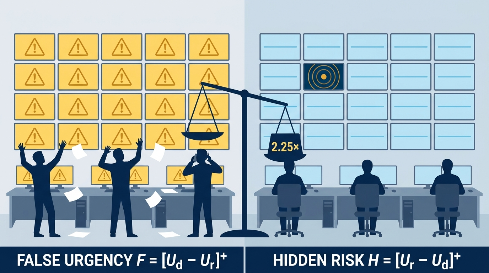
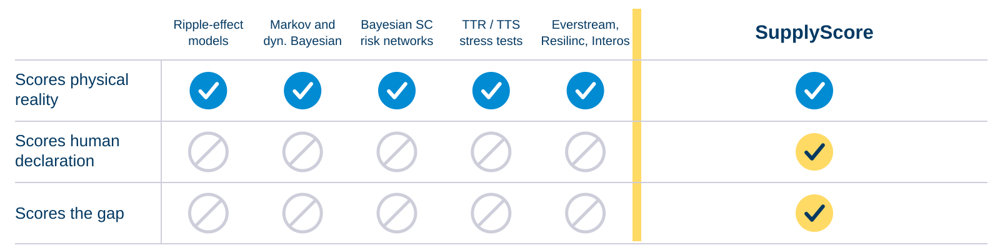
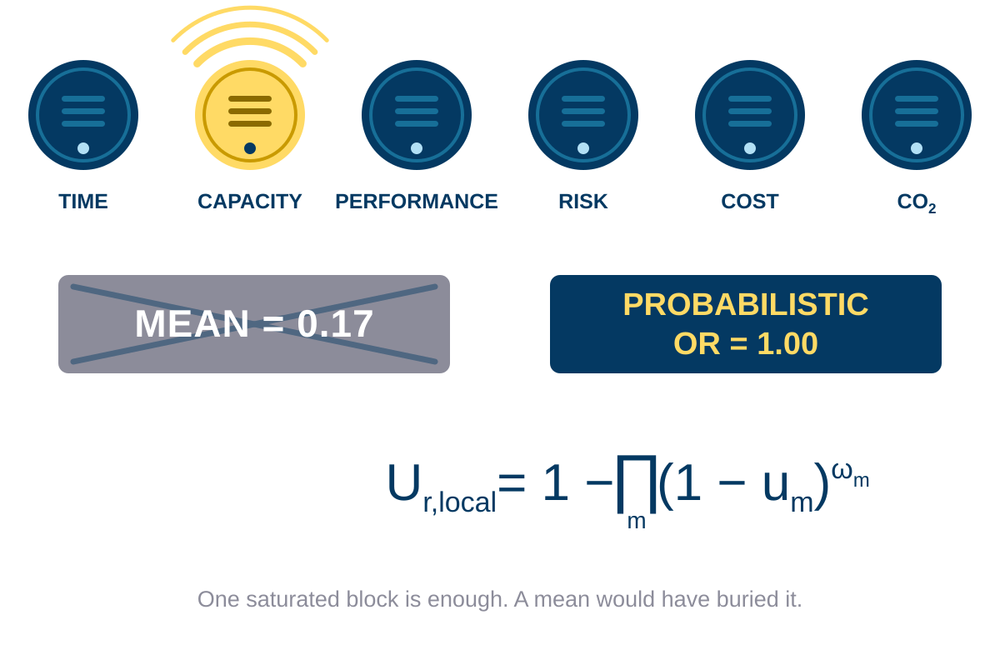
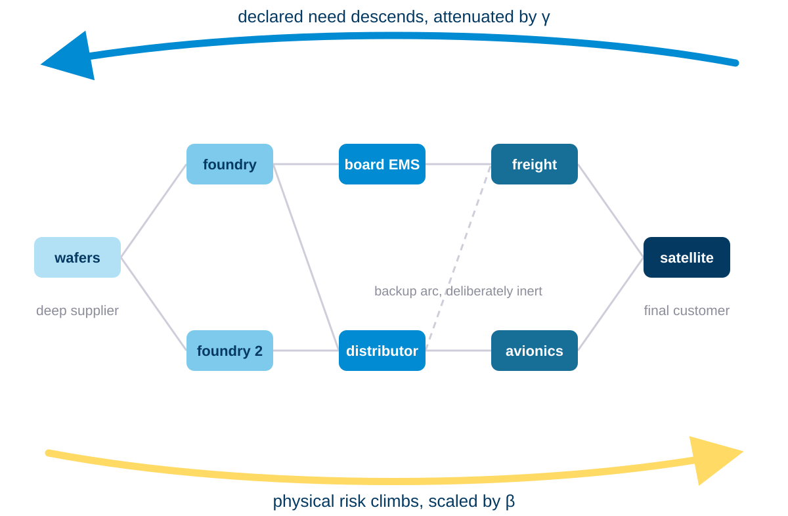
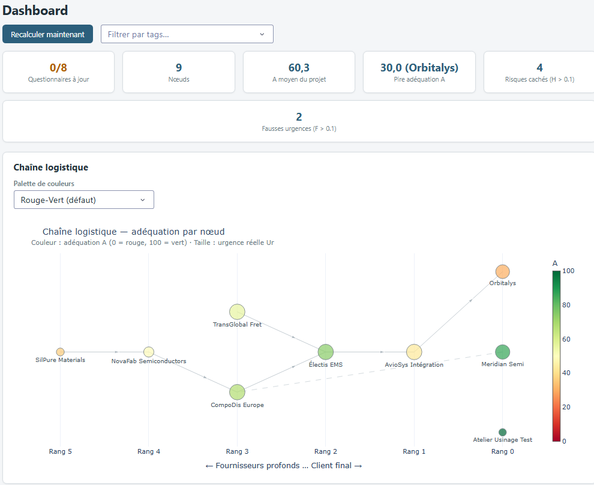
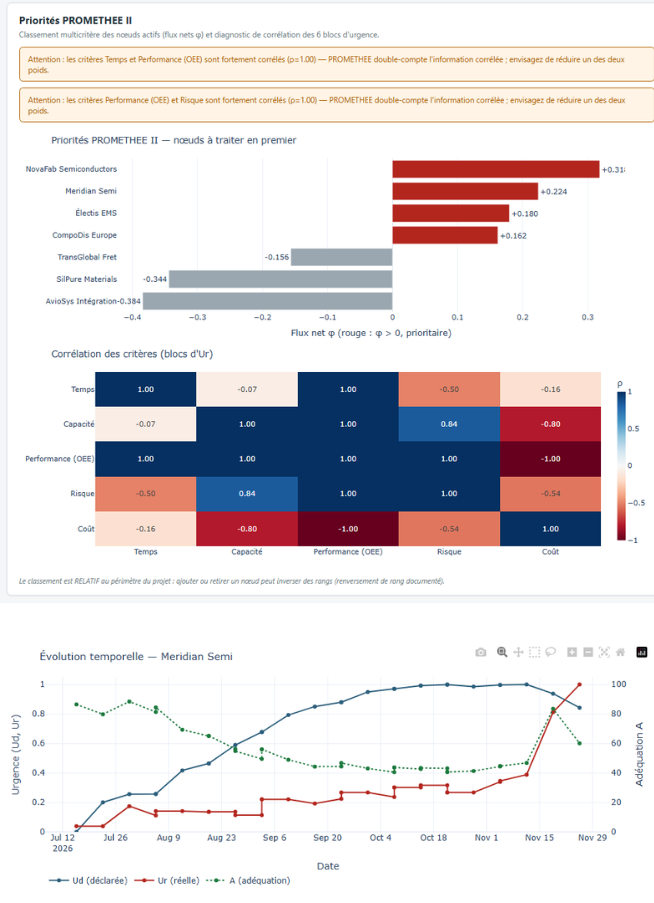
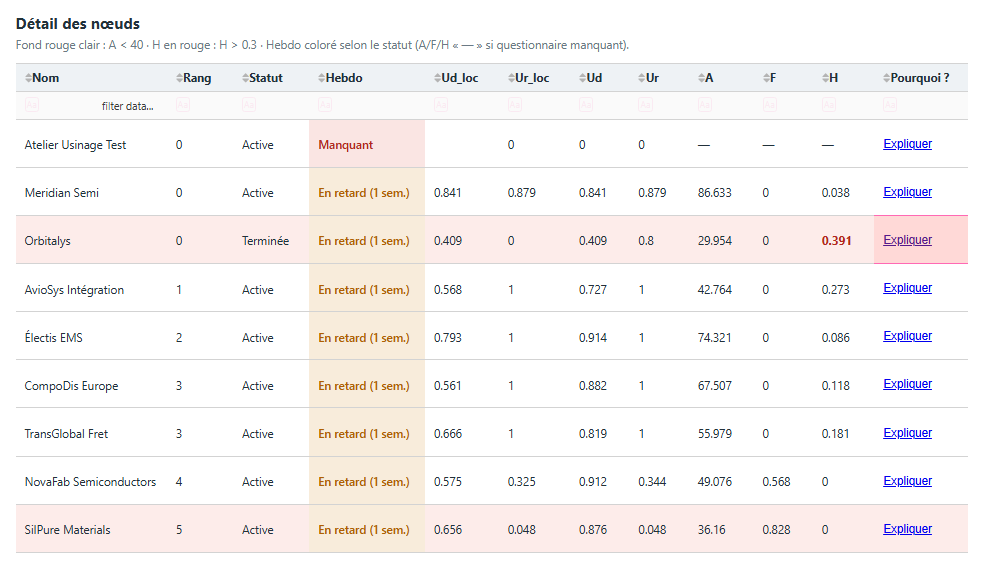
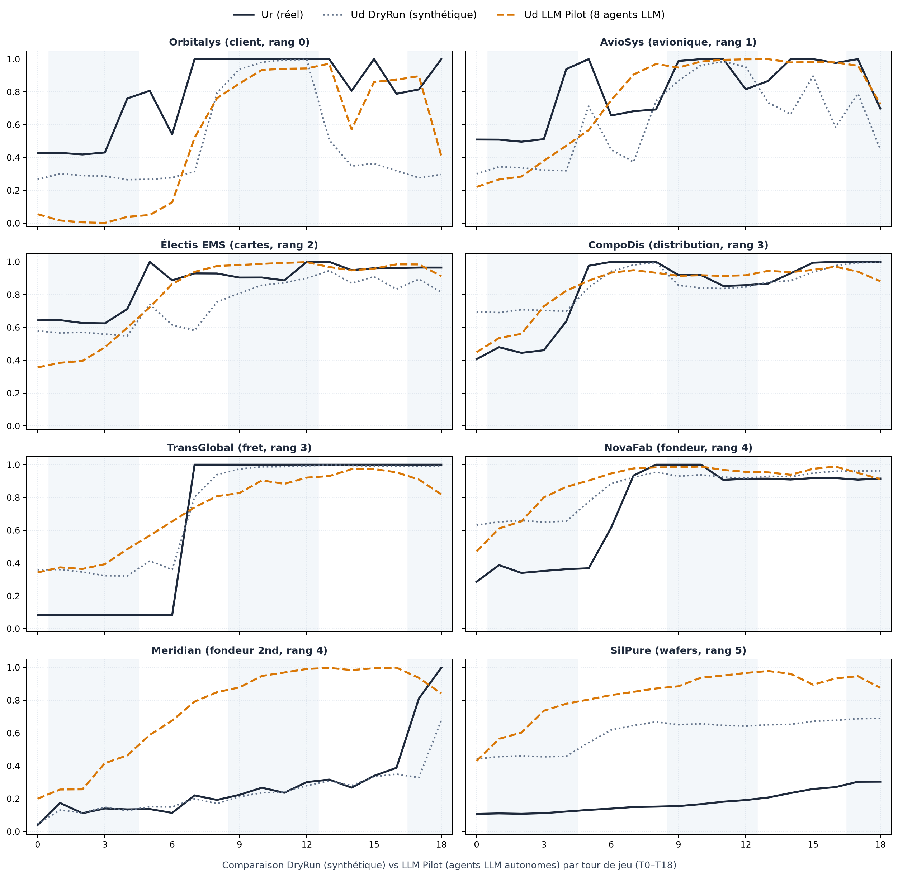
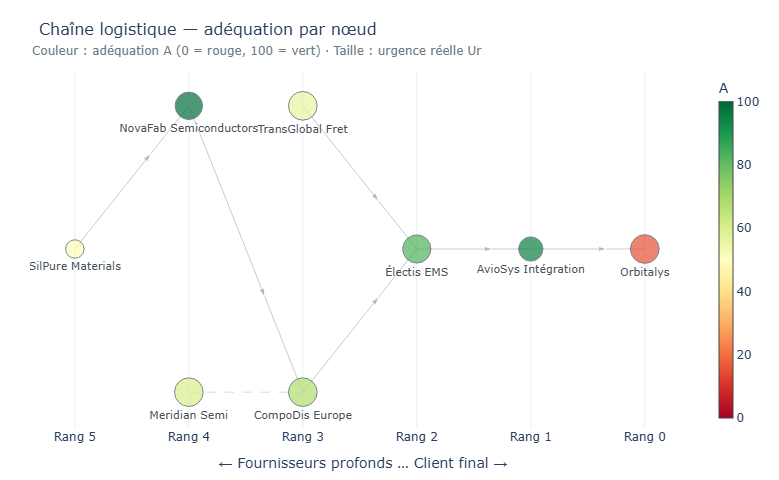
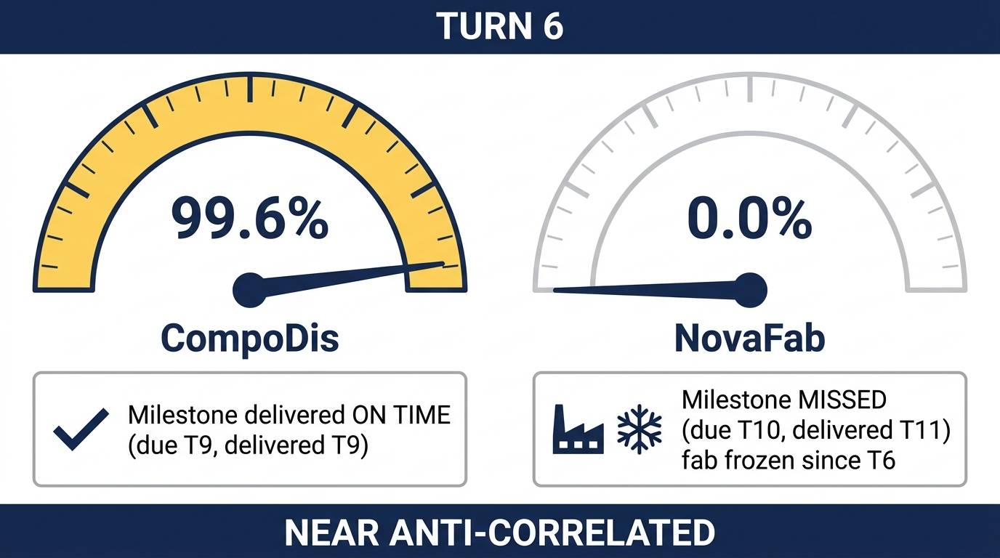

MSc in Computational Software Techniques in Engineering : Digital Engineering Design
Measuring the gap between declared and real urgency
SupplyScore, a cognitive digital twin that tells you when you are
not worried enough, before the line stops.
THE THREAD
Every honest measurement in this project contradicted a belief,
and each contradiction is why the instrument can now be trusted.
1
THE BLIND SPOT
Everything is green. The line stopped anyway.
- Two failures hide in every dashboard, and they have opposite signs
- False urgency F = [Ud − Ur]+: everyone cries wolf, premium capacity saturates, the next alert is believed a little less
- Hidden risk H = [Ur − Ud]+: the data screams, nobody declares, the rupture arrives with the options already expired
- Panic is expensive and recoverable. Silence is cheap and irreversible
- So the score is deliberately asymmetric: same divergence of 0.5 scores A = 53.1 for panic and A = 21.1 for silence

2
THE GAP IN THE FIELD
Everyone scores the world. Nobody scores the gap.
- Ripple-effect models, Markov and dynamic Bayesian disruption models, Bayesian supply-chain risk networks, TTR/TTS stress tests
- Commercially: Everstream, Resilinc, Interos, mapping multi-tier networks at a scale no research prototype reaches
- All of them score physical reality. None records the human declaration as a quantity, so none can subtract one from the other
- Not claimed as novel: the propagation algebra (a classical survival product), AHP, PROMETHEE II, Monte Carlo PERT, noisy-OR. Every method here is established
- Claimed: the quantity they are assembled to compute, and the discipline imposed on the assembly

3
WHAT WAS BUILT
Two flows, one score
- Ur, real urgency: six KPI blocks (time, capacity, performance, risk, cost, CO₂) combined by weighted probabilistic OR, not a mean
- Why: a total material rupture with five healthy blocks averages to 0.17 while the line is physically stopped. One saturated detector must trip the alarm
- A missing block is ignored, never imputed: absence of measurement is not evidence, in either direction
- Ud, declared urgency: weekly AHP over four fixed criteria, with a blocking consistency gate at CR < 0.10. Block weights by Fuzzy Best-Worst Method
- Propagation: declared need descends the DAG attenuated by γ, physical risk climbs it scaled by β
- A(t): Prospect-Theory asymmetric loss, λunder = 2.25, α = 0.88, both measured by Tversky and Kahneman, not tuned here


4
DELIVERED, AND AUDITABLE
A score that can be argued with
- 86 Python modules across 13 packages, 1 974 automated tests, coverage gate blocking below 90 %, thirteen application pages
- One write path. Every business write is validated, diffed and audited inside the same transaction as the change. The local CI greps the UI layer for direct writes and fails the build if it finds one
- Exact decompositions, not attributions. Ud splits additively by criterion; Ur splits exactly in log-survival space by block
- So a player who contests a score of 46.5 is answered term by term, on screen, with the audit trail underneath
- Append-only history, WAL databases, integrity-checked backups, three clocks (real, game, fixed)



5
THE TEST
HÉLIOS: the chip crisis, replayed blind
- The 2020–2022 semiconductor shortage rebuilt as an 8-node, 18-turn serious game under narrative cover. Players are never told which crisis they are in
- Ur fed by authentic public series (INSEE, WSTS, BLS) frozen under SHA-256; twelve calibrated events pinned to dated real ones: Texas freeze, Renesas fire, Suez, Taiwan drought, Malaysian back end, the autumn bullwhip
- Pre-registered and frozen at day five: six hypotheses, numeric thresholds, and the analysis code all written before any data existed
- A null baseline imposed on itself (precision 0.16, recall 0.27), structural anti-lookahead in the briefing generator, two placebo briefings, and one third-party dataset rejected at the authenticity check


6
WHAT BROKE, AND WHAT IS NEXT
The instrument found four faults in itself
- Milestone risk is blind to events. It reacts only to nominal lead time, and no calibrated event routes there. At turn 6 it announced 99.6 % on a milestone delivered on time and 0.0 % on one that was missed while that factory sat frozen. Near anti-correlated
- The shock did not propagate, upstream or downstream, on a model whose reason to exist is propagation
- Calibration fails in both directions at once, which is why the mean looks almost right while the skill score is deeply negative
- The ladder was climbed out of order: the historical replay ran before the model had ever been trained. That mistake prevented a costlier one, since running the synthetic factory first would have taught a model to be well calibrated on noise
- Next, in this order: repair the core → run the factory → train and calibrate → re-test HÉLIOS against the archived before-repair measurements → the human campaign

T1 ✓Functioning on synthetic data. 19-turn replay end to end.
T2 —Generalisation. Skipped. The synthetic factory has never run at scale.
T3 !Historical replay. Attempted early; returned four faults, not validation.
T4 ⊘Utility. The causal battery fails its own validation and the pipeline withholds the artefact.
The prescriptive layer is gated shut by the system itself: on a failed causal validation
the effects artefact is never published, while the forecast still is. Nobody overrode it.
The last measurement that disagreed with us was made by the system.